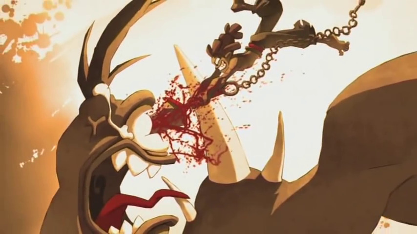

Lore del Krosmoz
Calculadora de Drop Dofus
Calculadora de Drop Wakfu
Bestiale
NUEVO
Lance Dur Serie
Wakfu Temporada 4
NUEVO
Wakfu Temporada 3
Ovas Wakfu La Misión de los Dofus Selatrop
Wakfu Mangas
Wakfu Temporada 2
Especial Ogrest la Leyenda
Wakfu Temporada 1
OVA Noximilian, el Relojero
Especial de Oropo
Ogrest Manga
Dofus Libro 1: Julith
Los Tesoros de Kerubim
Dofus Manga
Cire Momore

Especial de Gultard
Fragmentos Encontrados